えび反る梅吉 [梅吉]
しばらく遊ばなかったおもちゃ、えびちゃん。
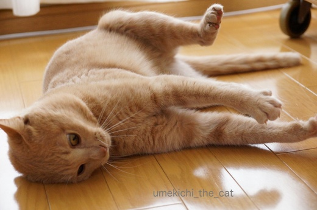
この日は元気よくガブガブケリケリ。
ああ・・・目が雷神さんみたいになってます(⌒-⌒; )
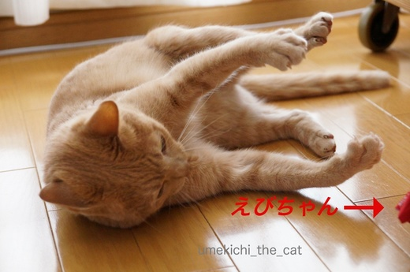
散々しばきまくった後は
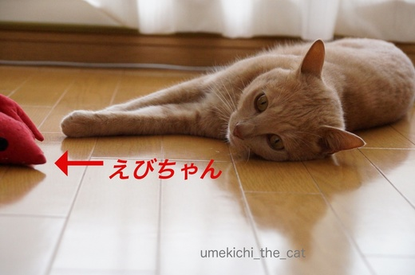
![[猫]](https://blog.ss-blog.jp/_images_e/101.gif) ふうっ・・・（こてん）
ふうっ・・・（こてん）
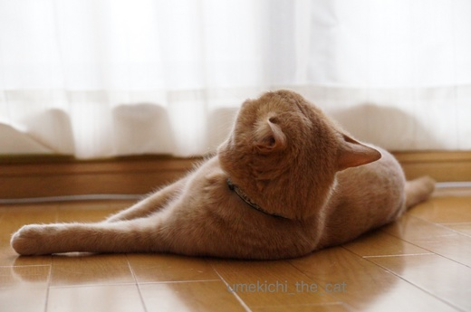
わしもひとつ、えびぞってみようかいな。
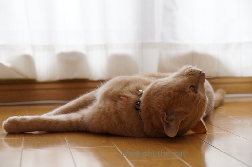
ぐい〜〜ん
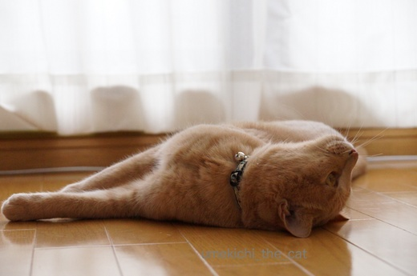
おお〜、反りましたね![[ぴかぴか（新しい）]](https://blog.ss-blog.jp/_images_e/150.gif)
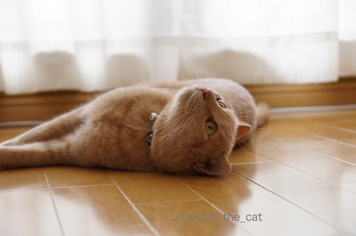
ぐいっ！
おかおがみえたほうがええやろ？
いえいえ、えびぞっててもおっとこ前度は変わりませんよ（親バカ）。
 ↑ガブッと一押し↑
↑ガブッと一押し↑
’17食博覧会・大阪。
おっとが会社に置いてあった入場券をタダでゲット。
ちなみに大人ひとり2.200円也。会場内で買うフードはまた別料金。
自分のお財布からは絶対買わない値段です。
連休谷間の平日に行きましたが結構な人。
それでもフードは長いところでも5分ぐらいで買えましたよ。
休日だったらフードを買うのに長蛇の列だとか・・・・
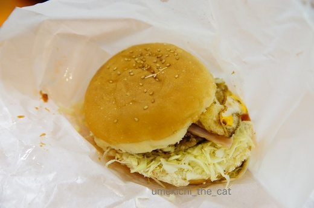
まずは、佐世保バーガー。（チーズバーガー）
ファストフードじゃないちゃんとしたバーガーを食べたのは久しぶり。
ハンバーグがジューシーで美味しい。
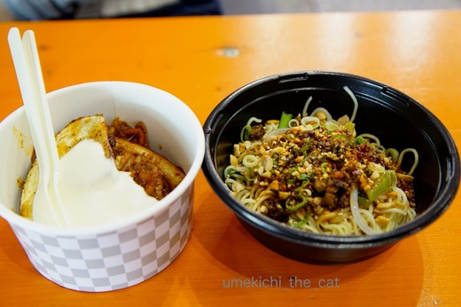
チーズダッカルビと汁なし担々麺。
チーズダッカルビはカルビ焼肉にのび〜るチーズを絡めて食べます。
つけあわせはフライドさつまいも。
韓国旅行をして来た方のブログで美味しそうと思っていたので早速オーダー。
めちゃめちゃビールの進むお味でした＾＾
汁なし担々麺は辛いバージョンを食べたのですが本当に辛かった！！
食べているうちに麻辣で頭がぼおっ〜。辛いの大好き。美味しかった〜〜。
このお店は我が家から地下鉄一本で行けるところにある様子。
今度行ってみなくっちゃ。
この他長野の野沢菜おやきと名古屋の台湾風まぜそばをいただいてお腹いっぱい。
ビールマイスターが注いでくれる樽生プレモルも美味しゅうございました。
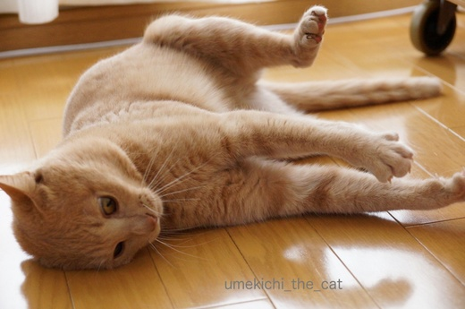
この日は元気よくガブガブケリケリ。
ああ・・・目が雷神さんみたいになってます(⌒-⌒; )
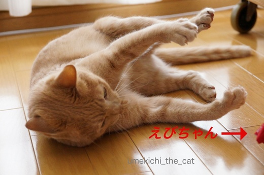
散々しばきまくった後は
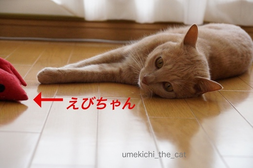
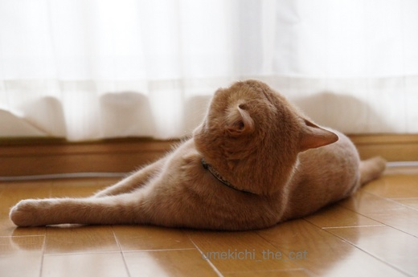
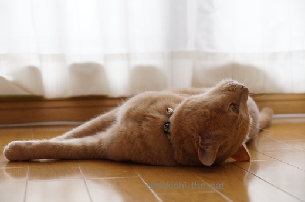
ぐい〜〜ん
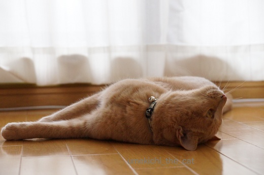
おお〜、反りましたね
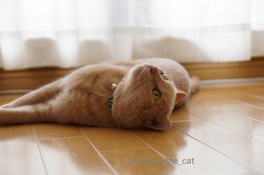
ぐいっ！
いえいえ、えびぞっててもおっとこ前度は変わりませんよ（親バカ）。
’17食博覧会・大阪。
おっとが会社に置いてあった入場券をタダでゲット。
ちなみに大人ひとり2.200円也。会場内で買うフードはまた別料金。
自分のお財布からは絶対買わない値段です。
連休谷間の平日に行きましたが結構な人。
それでもフードは長いところでも5分ぐらいで買えましたよ。
休日だったらフードを買うのに長蛇の列だとか・・・・
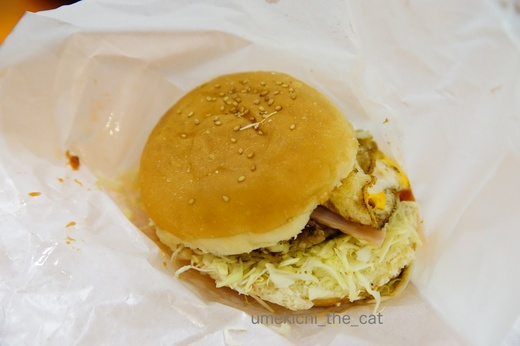
まずは、佐世保バーガー。（チーズバーガー）
ファストフードじゃないちゃんとしたバーガーを食べたのは久しぶり。
ハンバーグがジューシーで美味しい。
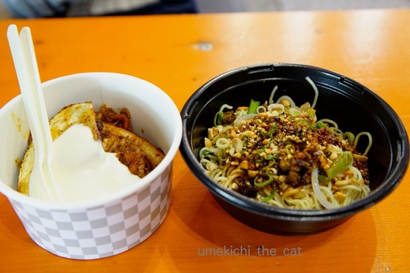
チーズダッカルビと汁なし担々麺。
チーズダッカルビはカルビ焼肉にのび〜るチーズを絡めて食べます。
つけあわせはフライドさつまいも。
韓国旅行をして来た方のブログで美味しそうと思っていたので早速オーダー。
めちゃめちゃビールの進むお味でした＾＾
汁なし担々麺は辛いバージョンを食べたのですが本当に辛かった！！
食べているうちに麻辣で頭がぼおっ〜。辛いの大好き。美味しかった〜〜。
このお店は我が家から地下鉄一本で行けるところにある様子。
今度行ってみなくっちゃ。
この他長野の野沢菜おやきと名古屋の台湾風まぜそばをいただいてお腹いっぱい。
ビールマイスターが注いでくれる樽生プレモルも美味しゅうございました。
2017-05-05 17:43
nice!(41)
コメント(18)

カフェオレ色の梅吉

梅吉 2023年8月10日 永眠


梅吉と出会った譲渡会

犬猫の理由なき殺処分ゼロ
妄想広告
UMEKICHI 光

爆発的に早い！
時々攻撃的！
Thanks to Mr.Boss365
爆発的に早い！
時々攻撃的！
Thanks to Mr.Boss365

体重計に乗るのが楽しみでありますね（笑）
美味しいものは美味しいよ。
by kiki (2017-05-05 19:35)
梅吉さん！夢中ですねぇ～
夢中で遊んでいる姿って
ずっと見ていられますね(#^.^#)
by きぃ (2017-05-05 19:49)
やわらかい光にのんびり佇む梅吉さん、
いいお写真ですね。^^)
'17食博覧会、こりゃビールが進みますね（汗）。
by yes_hama (2017-05-05 20:42)
ニャンコのエビ反り、逆猫背ですね(^_^;)
食博、一度だけ行ったことあります！
もんじゃ焼き１つ買うのに長蛇の列、ヘトヘトに疲れて結局帰りに居酒屋で飲みなおしたのを覚えてます。
平日に行って正解でしたね(*^▽^*)
by ゆきち (2017-05-05 22:00)
おお、漢梅吉さんが遊んでるぅ〜！
暖かな日差しの中、気持ち良さそうですね(*´▽｀*)
食博の入場料、高っ(◎_◎;)
美味しそうですけど、散々飲み食いしてたら大変なことに...(^_^;)
by ひでぷに (2017-05-05 23:13)
食博すごい人ってラジオでもいっていましたよ。
平日でも混雑なんですね。
by みぃにゃん (2017-05-05 23:25)
ホントだ！雷神さん！！(^^;
お手々もあんよも、それっぽい！
by も〜 (2017-05-06 09:25)
陽だまりの中のカフェオレさん、心安らぐ色合いです♪
by Ginger (2017-05-06 14:14)
海老反ってても、イケにゃんですよ〜(^.^)
エビの蹴りぐるみ、たぶん我が家にもあるのと同じだ！
これ、ときどき人気者になるんですよね〜。
ところで、入場料2200円って、驚きました！！
これで、美味しいものが食べれる(^^;;
by morichan (2017-05-07 03:55)
梅吉さん、エビさんを鍛えてあげてたんですねぇ♪( ´▽｀)
うちのノエルはこの前はエビよりもうさぎをしばきまくってましたが、
難を逃れたはずのエビさんはニケにしばきまくられてましたw
by ニッキー (2017-05-07 12:20)
kikiさん＞ああ〜、怖いことをおっしゃる^^;
ただ、言い訳をしますと、オーダーしたのは全て一つで二人でシェア。
・・・それでもハイカロリーですよね〜^^;^^;
罪滅ぼしに駅一つ分多めに歩いて帰って来ました。
きぃさん＞わんこ、ニャンコの遊んでいる姿は時間泥棒ですよね〜＾＾
ついつい見入って時間が過ぎてゆく・・・・
掃除の途中なんてとっても危険ですww
yes_hamaさん＞柔らかな日差しが楽しめるのもあと一月くらいでしょうか。
ジメジメした季節の後は灼熱地獄・・・・
にゃんこには今のうちたくさん光合成して欲しいですよね＾＾
'17食博、会場内ぐるり360℃、すべてビールが進む系でした^^;
ゆきちさん＞あ、ということは食博、一度で懲りたのですね〜ww
我が家は例えタダ券でも平日じゃなかったら行かなかったと思います。
イベントも良いけれどちゃんとしたお店でゆっくり落ち着いて食事をしたい、
そんなお年頃になって来ました(⌒-⌒; )
ひでぷにさん＞食博高くてびっくりですよね〜。
プロパー料金で入場して、大行列に並んで、高いフードを買って
（私たちが行った日も「お肉」や「うに」は大行列でした）
落ち着かないパイプ椅子でかんかん照りの中で食べる・・・
なにかの苦行！？って思いましたよ〜(⌒-⌒; )
大したものじゃなくてもお家で作ってゆっくり食事・・・・小市民で〜すww
みぃにゃんさん＞関西圏では話題になっているんですね！
休日の人混みは・・・想像しただけで怖じ気づいちゃいます^^;
も〜さん＞つめがみょ〜んと出ているところがますますそれっぽいでしょう＾＾
左甚五郎の寝ていないねこもこんな目つきをしてますよね〜。
モデルは梅吉の前世かもＯ(≧▽≦)Ｏ
by ちぃ (2017-05-07 16:56)
しばらく遊ばなかったおもちゃも、間が空くと遊んだりしますよね♪
「食博」恐ろしい博覧会があるもんです（笑）
by palpal (2017-05-07 20:06)
こんばんは～はじめまして～♪ ほちゃ（hocha）と申します～♪
ご訪問と～コメント＆nice!本当にありがとうございました～♪
梅ちゃんｗ可愛いです～♪
by ほちゃ (2017-05-07 20:25)
Gingerさん＞梅吉の毛皮の色合いをうまく写すのはなかなか難しいのですが
この日は肉眼で見ているのと近い色合いで撮れました♪
柔らかな陽だまりが良かったようです(๑•̀ㅂ•́)و✧
morichanさん＞そうなんですよぉ〜ww
海老反ってても雷神さんの目でもイケにゃんなんです＾＾
エビの蹴りぐるみ、ソフィーさんポポさんも楽しまれるんですね！
飽きたんだな〜と思っていたら突然始まるエビちゃん祭り。
それはもう気の毒なぐらいガブガブケリケリで何度縫合手術をしたことか^^;
食博の入場料×二人分、プラスすること交通費、場内のフード料金・・・
そのお金で静かな落ち着いたところでゆっくり食事をしたいと
思ってしまうお年頃のワタクシです（＾◇＾）
ニッキーさん＞「梅吉くんたまにぼくと遊んでよ〜」と
言いながらエビちゃんを近づけたらそれはもう大変なガブガブケリケリで^^;
ニッキーさん宅といい我が家といい、連休中は受難のエビちゃんでしたねww
palpalさん＞遊ばなくなったので「これ捨ててもいいかなぁ？」って差し出すと
突然お気に入りになったりとかね＾＾
猫様に断捨離という言葉は通用しないのかしら・・・
食は博覧会にしなくても良いよね〜。ゆっくり落ち着いて食べるのが一番！！
by ちぃ (2017-05-07 20:30)
ほちゃさん＞お越しいただいてありがとうございます♪
やんちゃな梅吉ですがまた見に来てくださいね〜。
by ちぃ (2017-05-07 20:32)
雷神さんのようなお目目の梅吉さん
良い表情ですねぇ～＾＾
エビちゃんも思いっきりガブガブケリケリされて
本望でしょう( ´艸｀)
by Moon (2017-05-08 08:02)
猫ちゃん身体柔らかい。
私も昔は柔らかかったのに。。。猫には敵いませんけどね。＾＾；
by muku (2017-05-08 08:25)
Moonさん＞エビちゃんからは
「エビ使いの荒い家やわ〜。ほかのんより働いてるで！」
と残業代を要求されそうです・・・^^;
mukuさん＞まだまだ諦めるのは早いですよ！！
今からでも日々のトレーニングで猫並みの（！！）柔らかさを取り戻せるはず。
おたがいがんばりましょーヾ(*ΦωΦ)ﾉ
by ちぃ (2017-05-08 13:21)